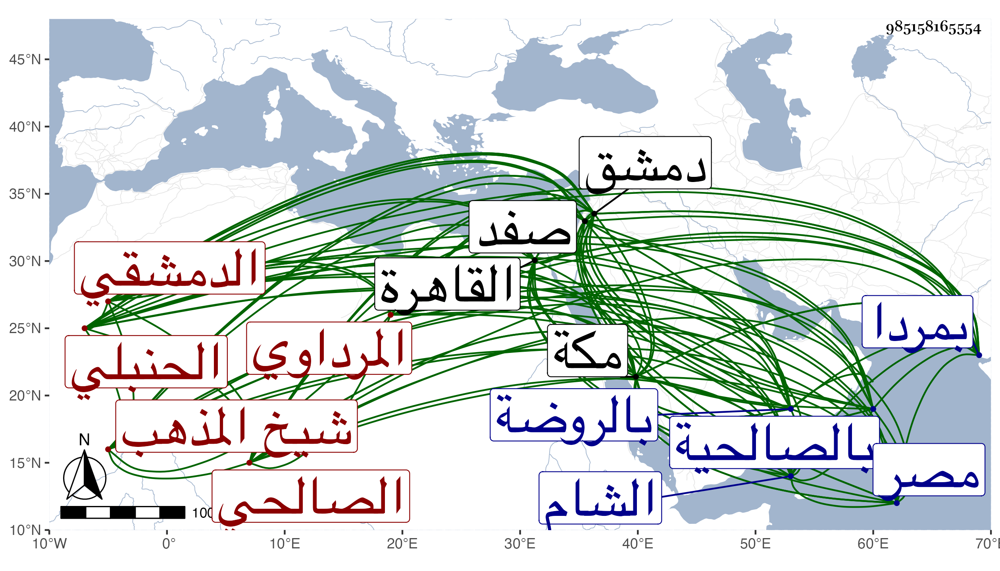

0902Sakhawi.DawLamic.ITO20230111-ara1.EIS1600.985158165554
Biography ID: 985158165554
761
علي بن سليمان بن أحمد بن محمد العلاء المرداوي ثم الدمشقي الصالحي الحنبلي ويعرف بالمرداوي شيخ المذهب . ولد قريبا من سنة عشرين وثمانمائة بمردا ونشأ بها فحفظ القرآن وأخذ بها في الفقه عن فقيهها الشهاب أحمد بن يوسف ثم تحول منها وهو كبير إلى دمشق فنزل مدرسة أبي عمر وذلك فيما أظن سنة ثمان وثلاثين فجود القرآن بل يقال أنه قرأه بالروايات فالله أعلم وقرأ المفنع تصحيحا على أبي الفرج عبد الرحمن بن إبراهيم الطرابلسي الحنبلي وحفظ غيره كالألفية وأدمن الاشتغال وتجرع فاقة وتقللا ولازم التقي بن قندس في الفقه وأصوله والعربية وغيرها حتى كان جل انتفاعه به وكان مما قرأه عليه بحثا وتحقيقا المقنع في الفقه ومختصر الطوفي في الأصول وألفية ابن مالك وكذا أخذ الفقه والنحو عن الزين عبد الرحمن أبي شعر بل سمع منه التفسير للبغوي مرارا وقرأ عليه في سنة ثمان وثلاثين من شرح ألفية العراقي إلى الشاذ . وأخذ علوم الحديث أيضا عن ابن ناصر الدين سمع عليه منظومته وشرحها بقراءة شيخه التقي والأصول أيضا عن أبي القسم النويري حين لقيه بمكة في سنة سبع وخمسين فقرأ عليه قطعة من كتاب ابن مفلح فيه بل وسمع في العضد عليه والفرائض والوصايا والحساب عن الشمس السيلي الحنبلي خازن الضيائية وانتفع به في ذلك جدا ولازمه فيه أكثر من عشر سنين بل وقرأ عليه المقنع في الفقه بتمامه بحثا والعربية والصرف وغيرهما من أبي الروح عيسى البغدادي الفلوجي الحنفي نزيل دمشق والحسن بن إبراهيم الصفدي ثم الدمشقي الحنبلي الخياط وغيرهما وقرأ البخاري وغيره على أبي عبد الله محمد بن أحمد الكركي الحنبلي وسمع الزين بن الطحان والشهاب بن عبد الهادي وغيرهما ، وحج مرتين وجاور فيهما وسمع هناك على أبي الفتح المراغي وحضر دروس البرهان ابن مفلح وناب عنه وكذا قدم بأخرة القاهرة وأذن له قاضيها العز الكناني في سماع الدعوى وأكرمه وأخذ عنه فضلاء أصحابه بإشارته بل وحضهم على تحصيل الإنصاف وغيره من تصانيفه وأذن لمن شاء الله منهم وقرأ هو حينئذ على الشمني والحصني المختصر بتمامه وفي الفرائض والحساب يسيرا على الشهاب السجيني وحضر دروس القاضي ونقل عنه في بعض تصانيفه واصفا له بشيخنا وتصدى قبل ذلك وبعده للإقراء والإفتاء والتأليف ببلده وغيرها فانتفع به الطلبة وصار في جماعته بالشام فضلاء . وممن أخذ عنه في مجاراته الثانية بمكة قاضي الحرمين المحيوي والحسني الفاسي . ومن تصانيفه الإنصاف في معرفة الراجح من الخلاف عمله تصحيحا للمقنع وتوسع فيه حتى صار أربع مجلدات كبار تعب فيه واختصره في مجلد سماه التنقيح المشبع في تخريج أحكام المقنع والدر المنتقى والجوهر المجموع في معرفة الراجح من الخلاف المطلق في الفروع لابن مفلح في مجلد ضخم بل اختصر الفروع مع زيادة عليها في مجلد كبير وتحرير المنقول في تهذيب أو تمهيد علم الأصول أي أصول الفقه في مجلد لطيف وشرحه وسماه التحبير في شرح التحرير في مجلدين وشرح قطعة من مختصر الطوفي فيه وكذا له فهرست القواعد الأصولية في كراسة والكنوز أو الحصون المعدة الواقية من كل شدة في عمل اليوم والليلة قال أنه جمع فيه قريبا من ستمائة حديث منها الأحاديث الواردة في اسم الله الأعظم والأدعية المطلقة المأثورة قال أنه جمع منها فوق مائة حديث والمنهل العذب الغزير في مولد الهادي البشير النذير وأعانه على ثصانيفه في المذهب ما اجتمع عنده من الكتب مما لعله انفرد به ملكا ووقفا . وكان فقيها حافظا لفروع المذهب مشاركا في الأصول بارعا في الكتابة بالنسبة لغيرها متأخرا في المناظرة والمباحثة ووفور الذكاء والتفنن عن رفيقه الجراعي مديما للاشتغال والإشغال مذكورا بتعفف وورع وإيثار في الأحيان للطلبة متنزها عن الدخول في كثير من القضايا بل ربما يروم الترك أصلا فلا يمكنه القاضي متواضعا مصنفا لا يأنف ممن يبين له الصواب كما بسطته في محل آخر وقد تزحزح عن بلده قاصدا الديار المصرية إجابة لمن حسنه له إما ليكون قاضيا أو مناكدا للقاضي في الجملة أو لنشر المذهب وإحيائه فعاق عنه المقدور فإنه حصل له مرض وهو بجب يوسف وعرج من جله إلى صفد فتعلل بها يسيرا وعاد إلى بلده فنصل منه وأعرض حينئذ عن النيابة بالكلية وذلك قبل موت البرهان بن مفلح بيسير إما لتعلق أمله بأرفع منها أو لغير ذلك وعلى كل حال فقد استعمل بعد موته ممن لعله فهم عنه رغبة حتى كتب بالثناء على النجم ولد البرهان بحيث استقر بعد أبيه ولعل قصده كان صالحا . وعلى كل حال فقد حاز رياسة المذهب وراج فيه أمره مديدة وذكر بالانفراد خصوصا بعد موت الجراعي ثم القاضي واستمر على ذلك حتى مات في جمادى الأولى سنة خمس وثمانين بالصالحية ودفن بالروضة رحمه الله وإيانا .
